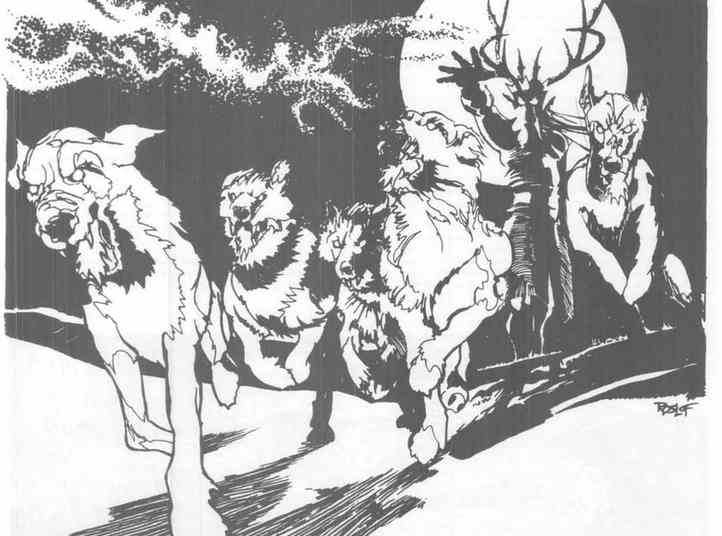
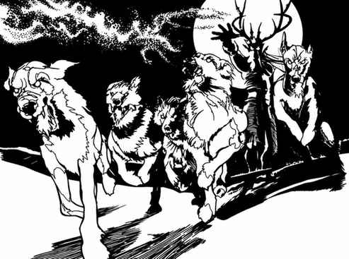

荒野猎团 · The Wild Hunt
荒野猎团是德鲁伊之地“生命力”的实体化：一名黑皮肤、头生鹿角的猎主，率领一群燃着绿色火焰的巨犬。当土地上出现足够强大的邪恶——例如高阶邪恶神殿或牧师——猎团便在夜间出现。号角与犬吠可传出数里；追逐猎团或未能通过魔法豁免的旁观者，都可能被吸收入猎团，成为猎人或猎物。
猎团从邪恶源头十里外开始追猎，通常在地面奔跑，也能跃入空中越过障碍。逃出十里范围、坚持到黎明，或杀死猎主与猎犬，是猎物仅有的生路。猎主 AC 0、100 点生命值、15 级巡林客，魔法抗性 25%，持 +3 长矛；荒野猎犬群通常出现 20 只，AC 5，每只 30 点生命值，伤害 2–8，魔法抗性 15%，死后会在战斗结束后重新出现。

